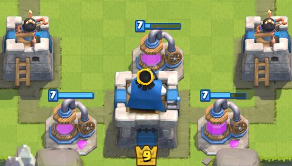

Clash Royale
Estrategias
Una vez entrados de cabeza en el universo de Clash Royale en los siguientes apartados intentaremos poner sobre la mesa las claves para convertirnos en los mejores jugadores posibles. Para ello, definiremos las principales estrategias y estilos del juego así como posteriormente las plasmaremos en algunos de los mazos más potentes del meta actual.
Si bien las estrategias que aquí presentamos pueden ser adaptadas a cualquier nivel o arena o a cualquier mazo, indiferentemente del nivel del jugador, hay algunas estrategias concretas que se verán beneficiadas o que requerirán la obtención de algunas cartas concretas, siendo algunas legendarias y donde destacan especialmente el caso del Miner control (minero) o del lavaloon (sabueso de lava).
Ciclado rápido (montapuercos-globo)
La peculiaridad de esta estrategia de juego se basa en conseguir mazos con alta facilidad de ciclado de las "win-condition", en este ejemplo concreto el montapuerco, mucho antes que las defensas o "counters" del rival. Esto se consigue gracias a tirar cartas de coste bajo (1, 2 o 3) de elixir para la defensa, consiguiendo volver a tener esa carta ganadora en mano muy rápido. La definición de ciclar una carta es el proceso desde que la tiras hasta que tirando otras cartas la vuelves a tener en tu mano. Por lo que si tiras cartas de un coste bajo como duendes, zap, tronco, espíritu de hielo… puedes volver a tener esa carta por un coste global de ciclado de 5 de elixir, por ejemplo. Las mejores cartas para ciclar en este tipo de mazos son el montapuercos y el globo. En el apartado de mazos veremos algunos de ellos.
Miner control (minero-veneno)
Estilo de juego muy estratégico cuyo objetivo es el de ir golpeando la torre poco a poco con el minero. Su principal pega, es que requiere si o si de esta carta legendaria. Al defender con tropas de poco elixir se consigue una ventaja de elixir extra que permite hacer el combo minero-venero (o minero-hielo o minero-hechizo), el cual te asegura unos 300 de daño a la torre por ataque y la eliminación de toda tropa pequeña que te tire para parar el ataque del minero. También el minero puede ayudarnos de muchas formas a lo largo de la partida, puede servir de tanque y dejar que nuestras tropas ataquen libremente la torre o atacar a estructuras que tenga el rival. Es un mazo de ataque muy lento pero fijo y suele apostar por el 1-0. Es aconsejable ir tirando el minero en lugares distintos para que no te lo paren y consiga golpear a la torre.
Zap/log bait (barril - princesa - gang)
El objetivo de esta estrategia es la de tener varias cartas que se defienden con el mismo hechizo creando una confusión y obligando al defensor a que haya de tomar decisiones precipitadas y a recibir algo de daño. Es uno de los estilos más desquiciantes y más equilibrado del juego porque es muy complicado evitar que te hagan daño y gracias a los hechizos fuertes que suelen acompañarlo tiene la facilidad de terminar las partidas cuando la torre está bastante tocada. A demás es muy completo porque para la defensa de cartas tipo tanque se suele introducir una estructura. Dificil de jugar, es el estilo preferido de los profesionales por su versatilidad y su constante control del ritmo de la partida. Si bien la princesa no es imprescindible, su obtención ayuda y mucho a la construcción de este mazo.
Beatdown (gigante - golem - pekka)
Beatdown significa abatir o golpear, y este estilo de juego se basa en precisamente eso, mazos pensados para demoler torres. Los mazos Beatdown son mazos muy fuertes pero también caros. Aunque sufriremos un poco para montarlos por su elevado coste de elixir, cuando lo consigamos tendremos sobre la arena un combo potentísimo difícil de parar para el rival. Las cartas principales de estos mazos suelen ser el gigante, el golem o el sabueso de lava. Su debilidad suelen ser las torres infernales o los dragones infernales, aunque en general todas las estructuras les hacen no ser tan efectivos. Es una mazo que sufre mucho contra ciclados rápidos y logbaits puesto que no permite atacar y defender a la vez.

Estrategia de pompeo (golem, triple o doble pekka)
La estrategia de pompeo (o recolección de elixir) se basa en la construcción de un mazo de coste de elixir elevado configurado principalmente por el recolector de elixir y una carta cara del juego. La manera de jugar este estilo es poniendo siempre el recolector y esperando tener una diferencia de elixir con el rival suficiente para que sea incapaz de parar el único ataque fuerte que hagamos, el cual normalmente se realiza en el último minuto con doble de elixir para hacer el combo completo. El ataque se empieza con la carta grande detrás de tu torre defensiva y una vez va avanzando intentar poner las tropas adecuadas siguiendo ese push con el objetivo de matar toda defensa que oponga el rival. Su debilidad, como con el beatdown, son los mazos de ciclado rápido o de menor coste que con un mazo tan caro son complicados de defender.
Estructuras ofensivas (mortero - ballesta)
Es uno de los estilos con más "win-rate" del juego, pero por contrapartida de los más complicados de jugar. La idea del mazo es un poco parecida a la del mazo de ciclado rápido, donde el objetivo del mazo se basa en poner estructuras ofensivas como la ballesta para atacar directamente sus torres. Como pasaba antes, se debe realizar un ciclado hasta la siguiente ballesta utilizando tropas económicas como caballero, arqueras, esqueletos, tronco... que además cumplan la función de defender tu ballesta. A veces es conveniente cambiar la estructura ofensiva de línea de ataque para cogerlos desprevenidos. Muchas veces que quieran tirarte la ballesta o mortero con un tanque es una buena solución, por ello jugar con torre infernal al lado para eliminar rápidamente ese tanque y seguir defendiendo la ballesta puede ser una buena opción.
Bridge spam (ariete-bandida-montapuercos)
Este estilo de juego, como su propio nombre indica, trata de poner muchas tropas directamente en el puente para formar un potente ataque directo. El éxito de esta estrategia consiste en saber cómo te defiende el rival para escoger las cartas más eficientes para el ataque. Suele ser un mazo complicado de parar porque en un mismo punto se juntan tropas con carga, con embestida, ataque de área… por lo que tienes que tener una defensa muy ordenada y clara. Su principal debilidad son los hechizos grandes ya que golpean todas las tropas (véase errores comunes). También hay que ir con cuidado con el contraataque del rival porque gastas todo el elixir de golpe y si el rival es capaz de pararlo con menos puede formar un contraataque letal.
Lavaloon (Sabueso de lava - globo)
Esta es la única estrategia con verdaderos nombres y apellidos: el sabueso de lava y el globo (el minero también, pero es más polivalente). Estilo de juego de los más complicados de defender ya que todo su ataque se basa en tropas aéreas, es muy efectivo en grandes desafíos. Generalmente el ataque es liderado por el sabueso de lava, el tanque aéreo por excelencia, seguido de tropas aéreas de coste menor por detrás para defender y finalmente, como regalo final, el globo, la última tropa y más destructora del mazo. Suelen ser ataques lentos donde una estructura puede darte el tiempo necesario para formar una buena defensa. La única forma de defender este tipo de mazos es paradójicamente atacando rápidamente la otra línea para obligarle a defender y que así no pueda montar la totalidad de su ataque.